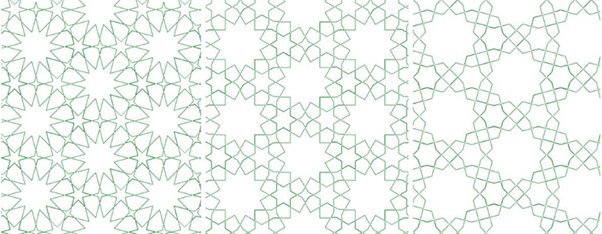

The field of Islamic geometry is a union of many things dear to me: discrete mathematics, historical mysteries, art, politics, and my heritage. Having lived in the Middle East sporadically throughout my life, the intricacies and symmetries of Islamic geometric patterns made a strong impression on me growing up, and ultimately helped formulate my love for mathematics.
Islamic geometry is a field full of interesting results and beauty, and I believe that through exposing more of the world to it, we can bring people together and help them see past our society’s rampant Islamophobia.
I’ve written software to generate Islamic star patterns, and occasionally give talks on their history and methods for algorithmically creating them.
|  |
I rarely play video games but after seeing @yomnapple's talk at !!con about Islamic geometry I had to buy Engare https://t.co/Mr51JJYFHY pic.twitter.com/N4AXwb50ja
— Tara Vancil (@taravancil) November 4, 2017
Beautiful #bangbangcon talk from @yomnapple on Islamic geometry! Who says math&art don't go together? Wish I had video of the interactivity! pic.twitter.com/EOckJtfYG2
— Nabil Hassein (@NabilHassein) May 7, 2017